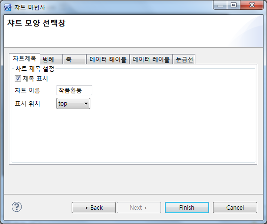
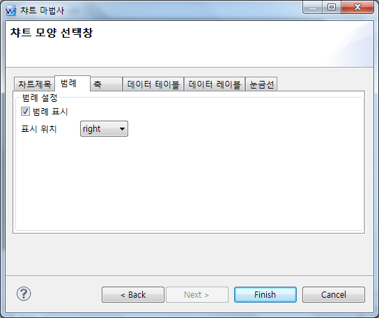

11.Chart
수정 일자 버전 (SP2)
WebSquare5 Studio : 20180117_1349_x86_B
WebSquare5 Engine : 5.0_2.2982B.20180223.154326_1.5
Chart는 다양한 통계를 출력할 수 있는 컴포넌트로 type속성을 이용하여 차트의 타입 변경이 가능합니다.
기본적으로 ColumnChart, BarChart, LineChart, RadialChart, PieChart외 3D타입 등 대략 22종 정도가 지원되며 2가지 타입의 차트를 적용하는 2중차트까지 사용할 수있습니다.
본 컴포넌트는 모바일에서 사용을 권장하고 있지않으며 FusionChart 컴포넌트를 권장합니다.
컴포넌트의 최상위는 HTML div Tag로 이루어져있으며 하위로 복합 Tag들로 구성되어있습니다.
11.1Property
Property | Description |
axis3dBackgroundColor | X,Y축의 배경의 색상값으로 type속성의 값이 3D 차트인 경우만 적용됩니다. |
axis3dBorderColor | X,Y축의 선의 색상값으로 type속성의 값이 3D 차트인 경우만 적용됩니다. |
* backgroundBorderColor | 컴포넌트 상위 테두리의 선의 색상값. |
* backgroundBorderWidth | 컴포넌트 상위 테두리의 선의 굵기값. |
* backgroundGradient | [default:true, false]상위 레이아웃의 배경 그라데이션의 사용 여부 |
bgColorPalette | [default:#ECEDED #FFFFFF]상위 레이아웃의 배경 그리드(가이드라인)의 홀/짝의 배경 색상값으로 공백으로 구분하여 정의합니다. ex) MistyRose #fff |
dataAxisChanged | [default:false, true]series의 묶음 기준을 데이터 기반으로 표현할지의 여부 X축 기준을 데이터를 기반으로 표현할지의 여부 / 데이터 축 변환 여부 |
displayFormat | 데이터에 적용할 format으로 화면에 표현되는 데이터의 label에 적용됩니다. |
displayFormatter | 화면에 표현되는 데이터의 label에 format을 적용할 Function명. |
displayXAxis | [default:true, false]X축의 label을 표시할지의 여부 |
displayYAxis | [default:true, false]Y축의 label을 표시할지의 여부 |
elementTitle | 차트가 표현되는 영역에 HTML의 title속성을 정의합니다. "$blank"로 입력 시 빈 문자열로 처리할 수 있습니다. |
fitGuidLine | [default:false, true]가이드라인의 영역(갯수)을 타이트하게 구성하여 차트를 그릴지의 여부. |
* gradientColorPalette | [default:#d8dfe0 #fafdfe]상위 레이아웃의 배경에 그라데이션을 사용할 경우 그라데이션의 시작과 끝의 색상값으로 공백으로 구분하여 정의합니다. backgroundGradient속성이 false로 정의된 경우 첫번째 정의된 색상값이 배경색으로 설정됩니다. |
guidLineStyle | 가이드라인 영역의 선의 색과 굵기를 설정합니다. ex) border-width:2px;border-color:green; |
id | 컴포넌트의 ID로 전역객체로 할당되며 script에서 본 id로 컴포넌트에 접근이 가능합니다. |
labelData | [default:false, true]데이터가 표현되는 label에 항목의 이름(labelNode속성에 입력한 컬럼/노드의 값)을 포함할지 여부 예시 ) "1월,1000" : 데이터가 "1000"이고 labelNode속성에 정의된 컬럼의 값이 "1월" |
labelNode | 데이터의 기준축의 label로 표현될 컬럼의 ID 또는 XPath. 차트를 구성하기위한 필수입력값입니다. |
labelPerValue | 차트의 데이터가 muliti일 경우 내부에 표시되는 label에 Series의 백분율 값을 포함할지 여부 |
labelSeparator | 차트 내부에 표시되는 label에 포함되는 값들 사이에 위치할 구분자 |
labelSeries | 차트 내부에 표시되는 label에 계열(series)이름을 포함할지 여부 |
labelValue | 차트 내부에 표시되는 label에 값(value)을 포함할지 여부 |
* lineStyle | 차트 series의 기본 라인 스타일 | border-width:2px |
mainGrid | 주축 눈금 선을 표시할지 여부 |
mainGridLineOnly | 주축 눈금선만 표시(투명 그리드 배경) |
maxYAxis | 차트의 Y축의 최대값 |
minYAxis | 차트의 Y축의 최소값 |
ref | dataCollection으로 chart 데이터 연동 시 사용. dataCollection 경로를 설정한다.labelNode 옵션과 함께 사용합니다. |
rootNode | 차트에서 쓰일 데이터 xml의 xpath |
roundRectangle | 배경 둥근 모서리 사용 여부 |
seriesBorderColor | 차트의 series들이 가지는 border 색상 코드 값들을 공백으로 구분한 string |
seriesBorderWidth | 차트의 series들이 가지는 border width값들을 공백으로 구분한 string |
seriesColor | 차트의 series들이 가지는 색상 코드 값들을 공백으로 구분한 string |
seriesPosition | series 표시 위치 |
seriesShow | series 표시 유무 |
seriesSymbol | 차트의 series들이 symbol의 값들을 공백으로 구분한 string |"square" "circle" "triangle-down" "diamond" "triangle-down" |
* style | Chart의 style 속성 |
subGrid | 보조축 눈금선 표시 여부 |
tabIndex SP2 | Tab Key를 이용 한 컴포넌트의 포커스 순서로 HTML의 tabindex속성과 동일한 기능을 제공한다. |
tableDisplayFormat | 테이블 display format string |
tableDisplayFormatter | 테이블 display 사용자 정의 formatter function name |
tableShow | 차트의 data table의 표시 유무 |
* title | 차트 타이틀 |
titlePosition | 차트의 title이 가지는 css position 속성 값 |
titleShow | 차트 타이틀 표시 유무 |
titleStyle | 차트 타이틀 Style |
toolTip | 컴포넌트 toolTip |
type | 차트 유형 |
usePopup | popup 사용 여부 |
valueType | 차트 value의 타입 |
xAxisTitle | X축 타이틀 |
xAxisTitleShow | X축 타이틀 표시 여부 |
xAxisTitleStyle | X축 타이틀 style |
y1AxisTitle | Y축 타이틀 |
y1AxisTitleShow | Y축 타이틀 표시 여부 |
y1AxisTitleStyle | Y축 타이틀 style |
y1DisplayFormat | Y 축 display format string |
y1DisplayFormatter | Y 축 display 사용자 정의 formatter function name |
y2DisplayFormat | 이중 차트에서 Y 축 display format string |
y2DisplayFormatter | 이중 차트에서 Y 축 display 사용자 정의 formatter function name |
11.2브라우저 캡쳐화면
WebSquare의 차트는 기본 차트 타입으로 다음의 차트를 제공합니다.
가로막대
세로막대
선
원
도넛
방사형
기본 차트 타입에 대한 확장 타입은 다음과 같은 종류가 있습니다.
3차원
누적형
백분율
[그림 11-1]1
[그림 11-2]2
[그림 11-3]3
11.2.1마법사 이용하기
차트 컴포넌트를 그리고 차트를 더블 클릭하면 차트 마법사를 이용할 수 있습니다. 차트 마법사를 이용하면 차트 모양, 차트 제목, 범례, 축, 테이블, 레이블, 눈금선 등 다양한 차트 설정을 손쉽게 할 수 있습니다.
[그림 11-4]4
그림 11-1차트 마법사 - 타입

[그림 11-5]5
그림 11-2차트 마법사 - 제목

[그림 11-6]6
11.2.2데이터 XML
WebSquare의 차트에 사용되는 데이터 형태는 다음과 같습니다. root노드와 각 노드의 value 속성값을 제외하고 차트에 사용되는 데이터 형태는 변경할 수 없습니다. series 노드는 범례에 해당합니다. series 노드는 data 노드 보다 먼저 와야 합니다. data 노드는 X, Y축에 해당하는 데이터입니다. data의 하위노드 label은 X축의 값이며, 하위노드 value는 X축에 대한 각 series의 Y축 값입니다. value노드는 각 범례에 대한 Y축 값을 나타내므로 series의 label노드 순서와 data의 value노드의 순서가 같아야 합니다.
<xf:instance> <data xmlns=""> <works> <series> <label value="방송" /> <label value="영화"/> <label value="도서" /> </series> <data> <label value="2006" /> <value value="5" /> <value value="21" /> <value value="100" /> </data> <data> <label value="2007" /> <value value="100" /> <value value="0" /> <value value="15" /> </data> <data> <label value="2008" /> <value value="200" /> <value value="1200" /> <value value="73" /> </data> <data> <label value="2009" /> <value value="500" /> <value value="200" /> <value value="34" /> </data> <data> <label value="2010" /> <value value="600" /> <value value="100" /> <value value="100" /> </data> </works> </data> </xf:instance>
11.2.3데이터 표현하기
차트에 데이터를 표현하는 방법은 데이터 XML이 주어지면 비교적 간단합니다
차트의 type과 rootNode가 설정되면 기본적인 데이터 표현이 가능합니다.
스크립트에 chart1.setXML( data ); ( chart1 : 차트의 아이디 ) 기재
property의 rootNode : works
[그림 11-7]7
부가적으로 데이터 포맷, 차트 제목, 범례, 테이블, X/Y축 제목 등을 표현해 보자. 경우에 따라 몇몇은 위에서 설명한 차트 마법사로 설정이 가능합니다. 차트 마법사로 설정하는 것과 동일하게 속성을 사용할 수도 있습니다. 차트 마법사로 설정하면 차트의 속성에 반영되므로 어느 방법이든 편하게 이용할 수 있습니다. 데이터 포맷이나 X,Y축 제목은 속성을 이용할 수 있습니다.
<w2:chart mainGrid="" id="chart1" title="작품활동" style="position: absolute ;left: 0px;top: 0px;width: 500px;height: 400px;" type="COLUMN" titleShow="true" seriesShow="true" tableShow="true" horizontalAxisShow="" verticalAxisShow="" labelSeries="true" labelData="" labelValue="true" labelPerValue="" titlePosition="top" seriesPosition="right" labelSeparator=":" rootNode="works" labelOnmouseover="" y1DisplayFormat="#,###" y2DisplayFormat="#,###" displayFormat="" tableDisplayFormat="#,###" xAxisTitleShow="true" xAxisTitle="년도" y1AxisTitleShow="true" y1AxisTitle="건수">; <;/w2:chart>;
그림 11-5차트 표현 - 다양한 설정
11.2.4축 변경
범례와 X축 간의 축 변경을 통해 다른 형태로 차트를 표현할 수 있습니다. dataAxisChanged 속성을 true로 설정하면 됩니다.
[그림 11-8]9
그림 11-6차트 축 변경
11.2.5팝업 사용하기
차트가 그려진 이후에도 사용자에게 팝업을 사용할 수 있도록 하여 설정을 변경해 볼 수 있는 기능을 제공합니다. usePopup 속성을 true로 설정하면 우클릭 버튼을 통해 차트 설정 메뉴를 사용할 수 있습니다.
[그림 11-9]10
그림 11-7차트 팝업 이용
[그림 11-10]11
그림 11-8차트 팝업 이용
[그림 11-11]12
그림 11-9차트 팝업 이용
11.2.6이중차트
Y축이 하나인 기본 차트를 좌, 우에 Y축을 2개로 하여 이중차트로 표현이 가능합니다.
이중차트 표현 방법은 간단합니다.
useDoubleChart 속성을 true로 합니다.
type 속성에 기본 차트 타입을 설정합니다.
type2 속성에 이중 차트로 표현할 다른 차트 타입을 설정합니다.
seriesAxisChk 속성에는 공백(space)을 구분자로 하여 데이터 순서에 맞게 Y(기본 차트), Y1(다른 차트)으로 설정합니다.
예:
<w2:chart mainGrid="" id="chart1" title="작품활동" style="position: absolute ;left: 0px;top: 0px;width: 500px;height: 400px;" type="COLUMN" titleShow="true" seriesShow="true" tableShow="true" horizontalAxisShow="" verticalAxisShow="" labelSeries="true" labelData="" labelValue="true" labelPerValue="" titlePosition="top" seriesPosition="right" labelSeparator=":" rootNode="works" labelOnmouseover="" y1DisplayFormat="#,###" y2DisplayFormat="#,###" displayFormat="" tableDisplayFormat="#,###" xAxisTitleShow="true" xAxisTitle="년도" y1AxisTitleShow="true" y1AxisTitle="건수" dataAxisChanged="false" usePopup="true" useDoubleChart="true" type2="POINT_LINE" seriesAxisChk="Y Y Y1"> </w2:chart>
[그림 11-12]13
그림 11-10이중 차트 1
이중 차트 표현은 API를 통해서도 가능합니다. applySeriesConfig( useDoubleChart , seriesUseChk , seriesAxisChk , chartType1 , chartType2 ) 이 API는 seriesUseChk 파라미터로 이중 차트에 표현될 범례에 대해서 선택도 가능합니다. seriesUseChk와 seriesAxisChk는 배열입니다.
예: chart1.applySeriesConfig(true, [false,true,true], ['Y','Y','Y1'] , 'COLUMN', 'POINT_LINE');
[그림 11-13]14
그림 11-11이중 차트 2
엑셀다운로드
차트 데이터를 엑셀로 다운로드하는 기능을 이용할 수 있습니다. 이는 API를 통해 가능합니다.
11.3Tip
chart의 디자인은 css 로 변경하는것이 아니라 차트가 제공하는 옵션에서 정의합니다. 변경방법은 기술지원에서 문의바랍니다.
데이터 연동 방법
DataCollection 만들고 디자인뷰에서 해당컴포넌트의 ref에 연결하거나
소스에서 instance의 data 안에 하단의 데이터를 넣은 뒤 해당컴포넌트 property의 rootNode에 연결합니다.
<works> <series> <label value="방송" /> <label value="영화" /> <label value="도서" /> </series> <data> <label value="2006" /> <value value="15" /> <value value="131" /> <value value="200" /> </data> </works>